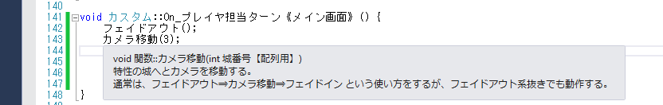
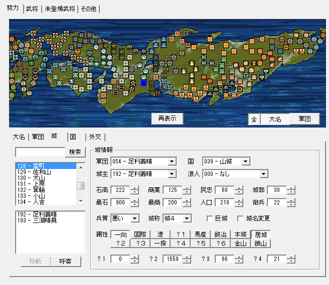
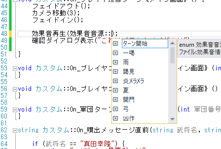
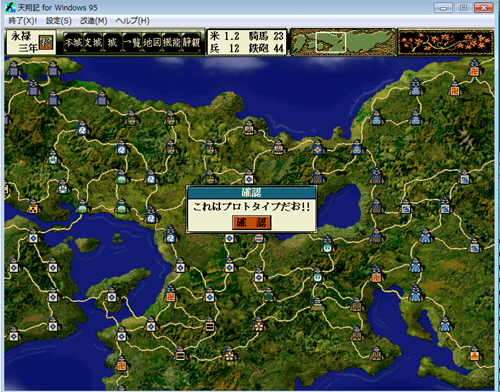

この節では、とにかくScenarioModのソースを実際にいじくってみて、感覚をつかみます。
さて、もう一度前節のソース、今度は後半を弄ってみましょう。
void カスタム::On_プレイヤ担当ターン《メイン画面》() {
フェイドアウト();
カメラ移動(3);
フェイドイン();
効果音再生(効果音音源::豊作);
確認ダイアログ表示("これはプロトタイプだよ!!");
}
まず、フェイドアウト(画面を暗くする)、フェイドイン(暗い状態から元へと戻す)は、良いとして
「カメラ移動(3)」の｢３」を変更してみましょう。
｢カメラ移動｣の｢３」というのは何だったでしょうか。｢カメラ移動｣にマウスを当ててみましょう。

すると、バルーンヘルプ表示が出るはずです。
｢城番号【配列用】｣
とあります。
この【配列用】というのは、このScenarioModに出てくるとても重要な概念となっています。
｢城番号｣は1番から始まっていますが、｢城番号【配列用】｣には｢0｣番から始まったと想定した番号を入れる必要がありますよ、という意味となっています。
別の言い方をしましょう。
｢城番号【配列用】｣とある場合、｢城番号｣から１を引いた値を渡せば良い、ということとなります。
城番号【配列用】 == 城番号 - 1
では、城番号はどこで求めればよいのでしょうか？
それはシナリオエディタの以下の項目で視覚的に見ることが出来ます。
また、メモリエディタの「p城情報」のタブでも確認することが出来ます。
｢室町｣でいうところの｢128｣。
これが城番号です。
厳密にはイベント等が発生することで、｢城名｣が変わっても｢城番号｣は変わりませんので
｢城の位置の番号｣といった方が妥当かもしれません。

例えば、｢室町｣にカメラを移動させるためには、｢128 - 1｣の｢127｣を「城番号【配列用】」に渡すこととなります。
フェイドアウト();
カメラ移動(127);
フェイドイン();
しかし、これではわかりにくいため、ScenarioModでは、すでに「全ての城」が定義済みです。
フェイドアウト();
カメラ移動(列挙::城::城配列番号::室町御所);
フェイドイン();
さらに短く
フェイドアウト();
カメラ移動(城配列番号::室町御所);
フェイドイン();
と記述することも出来ます。
さて、次に｢効果音｣を変えてみましょう。
下図のように、バックスペースキーを何度か押して、｢勝ち鬨｣を削除し、
｢::｣の次の位置にカーソルがあることを確認した状態で｢CTRL｣+｢SPACE｣キーを押してみましょう。
(CTRL+SPACEの組み合わせが、押しにくいキー配置になっているようなキーボードを利用している場合は、｢::｣のうち、後ろの｢:｣まで１つ消して、｢:｣を打ち直すと 同じ画面となります。)

鳴らしてみたい、好きな音源を選んでみましょう。
さて、再びいつものように、ビルドして、エラーが無いことを確認したら、
天翔記フォルダへと反映させ、天翔記を起動して変化を確認してみましょう。
変化したことを確認出来れば、この練習項目は終了です。
お疲れ様でした。
